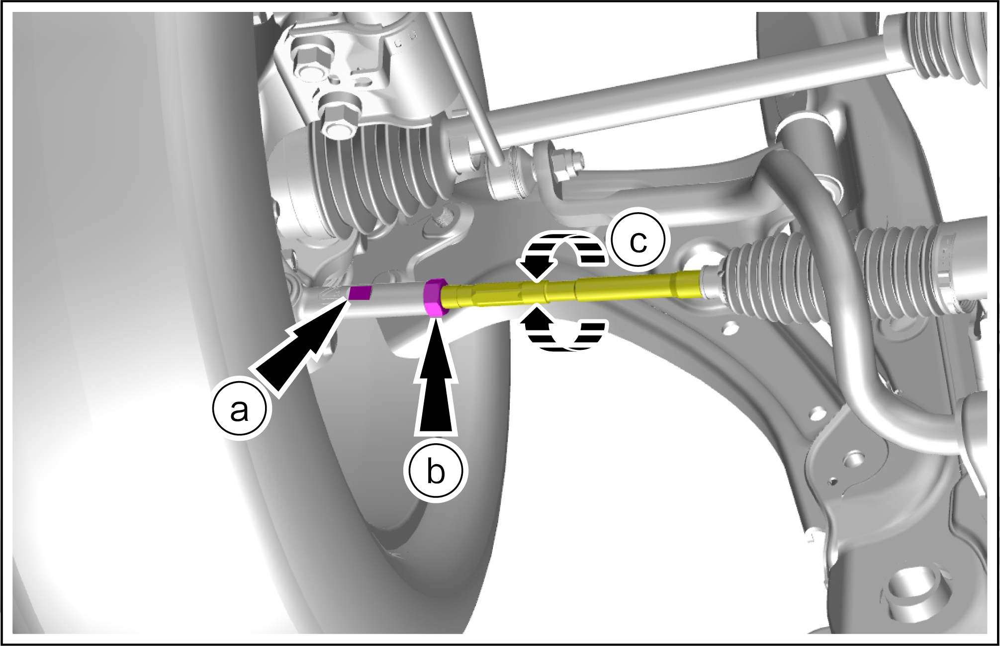

Inspection and adjustment of four-wheel alignment
Adjust

-
If the caster or inclination angle of the front wheel kingpin is not within the specified range, check whether the suspension components are bent or damaged. In the suspension components are bent or damaged, replace them. Never repair them by tapping or other means.
-
If the front and rear cambers fall out of the stipulated range, check whether the suspension components are bent or damaged. In the suspension components are bent or damaged, replace them. Never repair them by tapping or other means.
-
If the front wheel toe-in is correct, but the steering angle falls beyond the specified range or the internal steering angles are different, check suspension parts for bending or damage. In the suspension components are bent or damaged, replace them. Never repair them by tapping or other means.
-
Use the suspension device to adjust the front wheel toe-in.
-
Inspection before four-wheel alignment:
-
Release the parking brake to avoid incorrect measurement.
-
Check and confirm no modification has been made to the suspension.
-
Check the tire size and pressure against the tire information.
-
Check wheels for vibration and swing.
-
Check all ball joints of the suspension. (Hold the wheel and move it from up to down and from left to right to check the moving condition).
-
Let the wheel device jump for several times to stabilize the suspension.
-
-
Detection
-
Conduct wheel alignment inspection in accordance with the operating instructions of the four-wheel aligner.
-
-
Adjustment of front wheel total toe-in.
Reminder 左右两侧前轮总前束调整方法一致。
左右两侧前轮总前束调整方法一致。-
Fix toe-in adjustment bushing by wrench.
-
Loosen the lock nuts.
-
Rotate toe-in adjustment bushing until reaching the correct toe-in value.
Caution以同样的幅度，同时反方向调整左右车轮，可以获得正确的前束，同时，可以让方向盘保持平直。-
Total toe-in of front wheels: 0±1mm
-
-
After adjustment, fix the toe-in adjustment sleeve and tighten the lock nut to ensure that the toe-in setting does not change.

-